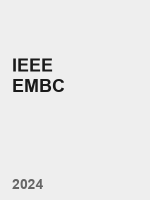
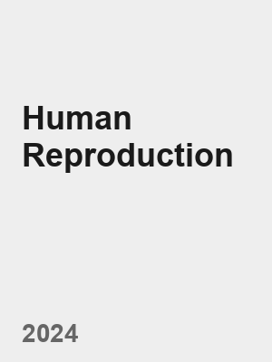
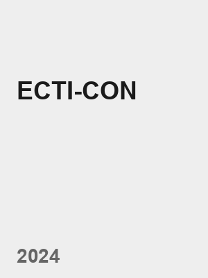
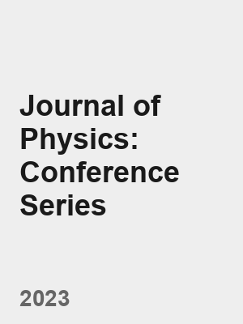

I am a PhD student in the Robotics Team of Prof. Yuen Chau, supported by the PISIT R-ASEAN scholarship. I am also Co-Founder of COREAXIS Technology Co., Ltd. (3DFabTH).
Scientific Reports, 2026
arXiv preprint, 2025

46th Annual International Conference of the IEEE Engineering in Medicine and Biology Society (EMBC), 2024

Human Reproduction, 39 (Supplement 1), 2024 (conference abstract)

21st International Conference on Electrical Engineering/Electronics, Computer, Telecommunications and Information Technology (ECTI-CON), 2024

Journal of Physics: Conference Series, 2023
Nanyang Technological University (Singapore) Present
Ph.D. student, School of Electrical and Electronic Engineering
Advisor: Prof. Yuen Chau
Scholarship: PISIT R-ASEAN Scholarship
Nanyang Technological University (Singapore) 01/2024 - 05/2024
Exchange student, Electrical and Electronics Engineering
Chulalongkorn University (Bangkok, Thailand) 2021 - 2024
BEng in Robotics and AI Engineering
Robotics, Mechatronics, Robotics and Automation Engineering
May 2026 - Jul 2026
Robotics Software Engineer (ROS-Industrial), Singapore
Aug 2024 - Feb 2026
IoT Lead Engineer, Bangkok, Thailand
May 2024 - Aug 2024
IoT Engineering Intern, Bangkok, Thailand
Jan 2023 - May 2024
Vice-President, Bangkok, Thailand
Aug 2022 - May 2024
Lead NLP Software Engineer, Bangkok, Thailand
Jun 2022 - Sep 2022
Full Stack Developer, Bangkok, Thailand
Jan 2022 - Sep 2022
Head Back End Developer, Bangkok, Thailand